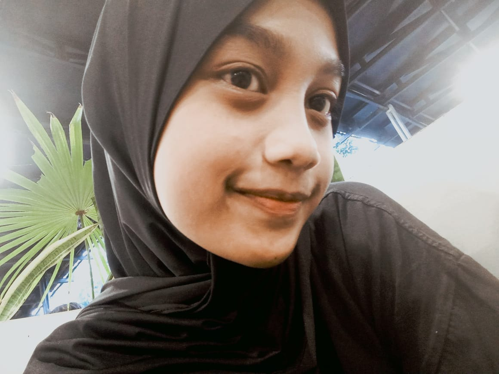

Kenali saya lebih dekat

akan selalu ada sempurna dalam ketidaksempurnaan
Saya sedang dalam perjalanan menjadi versi terbaik diri sendiri, belajar, mencoba hal baru, dan berkembang setiap harinya. Saya percaya bahwa setiap langkah kecil membawa perubahan besar.
Saya lahir pada tanggal 19 November 2008. Saya adalah anak kedua dari tiga bersaudara. Keluarga adalah fondasi terkuat dalam perjalanan hidup saya, memberikan dukungan dan semangat untuk terus berkembang.
Memulai perjalanan pendidikan formal di TK RA AL-HIKMAH.
Melanjutkan pendidikan dasar di SDN NGESREP 01.
Menempuh pendidikan menengah pertama di SMPN 27 Semarang.
Saat ini bersekolah di SMKN 7 Semarang, mengambil jurusan SIJA (Sistem Informasi Jaringan & Aplikasi).
Menikmati berbagai genre film sebagai hiburan dan inspirasi.
Musik adalah teman setia dalam setiap aktivitas.
Bereksperimen di dapur membuat berbagai kue dan roti.
Menjelajahi tempat baru dan mengumpulkan pengalaman berharga.
Explore dan mencoba makanan baru dari berbagai tempat.
Saya tertarik pada dunia kreatif digital seperti editing, dan eksplorasi teknologi untuk membuat karya yang menarik dan bermanfaat.
Saya bercita-cita untuk menjadi pribadi yang sukses di masa depan, serta mampu menghasilkan karya yang bermanfaat dan inspiratif bagi banyak orang.